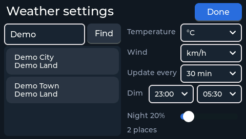
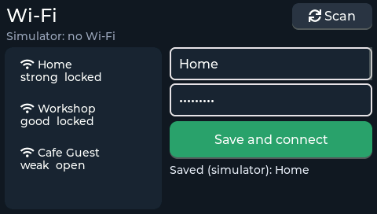
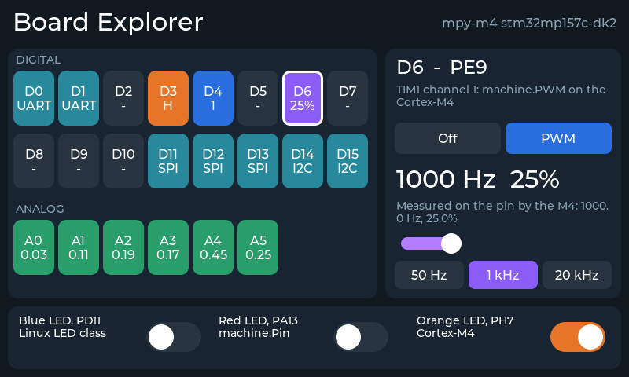

Examples¶
Each example is an LVGL MPY Studio project (project.json, with its Python modules inside), made
with the Studio's MCP tools. Open it in the Studio, try it in the simulator (demo data stands in for
the network and the sound), connect to the board and run it. To have it in the home screen's menu,
add it to settings.json, section home.
Each example has two projects with the same Python modules: project.json for 480×272 (STM32MP135F-DK)
and project-800x480.json for 800×480 (STM32MP157C-DK2). Sizes drawn by the code follow the widgets,
so the modules fit both.
Source: examples on GitHub.
Weather¶


Weather now and for the next five days from Open-Meteo (no account, no
key), with icons drawn by LVGL objects from the WMO weather code: no image files. The settings page
finds the place by name and sets the units, the update interval and the night: by default the
backlight goes down to 20% from 23:00 to 05:30, in the place's own time. curl downloads in the
background, so the screen never waits.
Source
Web radio¶

Internet radio stations, built in or from a stations.txt. GStreamer's gst-play-1.0 plays the
stream in the background through linuxproc.Process; the app connects to the Wi-Fi of the Settings
app by itself. Needs a sound card: a USB audio adapter is enough.
Source
MP3 player¶

The songs of the music folder, with titles and artists from their ID3 tags: play, pause, previous,
next, volume, progress. The same player module as the radio.
Source
Settings¶

Wi-Fi: scan, choose, type the password on the touch keyboard, connect. The choice goes to
settings.json, where every app finds it through mpy_settings and mpy_wifi.ensure().
Source
Shell¶
A terminal on the display, the home screen at power-on: built-in commands, the vi and edit
editors, Python programs and Linux programs on a pseudo-terminal, with the keyboard of the serial or
TCP terminal. A tap opens the app menu.
Source
machine: the hardware¶
Apps that show MicroPython's machine API on a Linux board, in
examples/machine.
Their hardware code is the standard API, the same as on a microcontroller; on the STM32MP157C-DK2
Pin is served by Linux and the rest by the Cortex-M4.
Board Explorer¶

The Arduino connector on the screen: tap a pin, make it an input, an output, an analog input or
the PWM, see its value live. The Cortex-M4 reads back the level of an output Linux drives and
measures its own PWM on the pin; the LEDs come from Linux's LED class, machine.Pin and the M4.
Nothing to wire.
Source